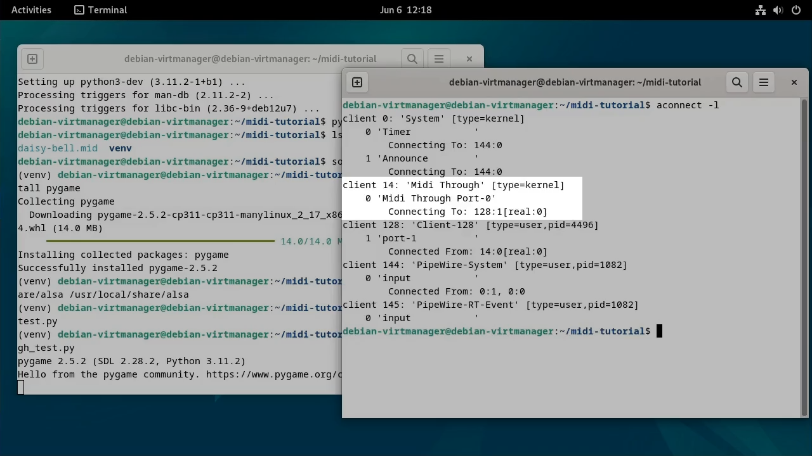

(Last Updated: June 6, 2024)
Hello and welcome to Jonny's Tutorials! Today, we will explore how to read MIDI data from the MIDI through port in Python using pygame. By the end of this tutorial, you will be able to interface a MIDI player with Python using the through port to capture and display incoming MIDI messages in real-time. This configuration can be used to synchronize audio with lights or motor movements on a Raspberry Pi, for example. Whether you are a musician looking to integrate MIDI into your Python projects, or just curious about working with MIDI data in Python, this tutorial is designed to help you achieve your goals.
For this tutorial, I recommend using Debian 12 Bookworm or a compatible version. (Note: WSL has been tested and does not work)
Open a terminal and navigate to the desired parent directory and create a directory for the tutorial.
Click here to download the daisy-bell.midi file for testing, accessible under the public domain (CC0).
Move the midi file to the midi-tutorial/directory.
Execute the following commands in the terminal to install necessary packages and set up the virtual environment.
(https://github.com/pygame/pygame/issues/3756)
pygame uses ALSA for midi. An update to ALSA seems to have moved some files. To allow pygame to locate them, create a symbolic link in the old directory.
Type or paste the following into your favorite code editor and save it as midi_through_test.py inside the midi-tutorial directory.
import pygame.midi
pygame.midi.init()
device_id = None
global device_count
device_count = pygame.midi.get_count()
for i in range(device_count):
device_info = pygame.midi.get_device_info(i)
if device_info[2] == 1 and b"Midi Through" in device_info[1]:
device_id = i
device = pygame.midi.Input(device_id)
while True:
if device.poll():
print(device.read(1)[0])
With Python still running, open another terminal and run:
Note the number after "client" on the line titled "Midi Through". This is the port you will play the MIDI file through.
Play the MIDI file using the following. Replace "14" with the port number you got from aconnect -l.
As you play the MIDI file, the Python script should display incoming MIDI events in the terminal (although you won't be able to hear anything). Congratulations! You have successfully captured MIDI data using Python. Now you can continue experimenting with different MIDI files and settings to further enhance your skills.
Happy Coding!
Do you have any questions or feedback, or just want to say "Hi"? Join my Discord!